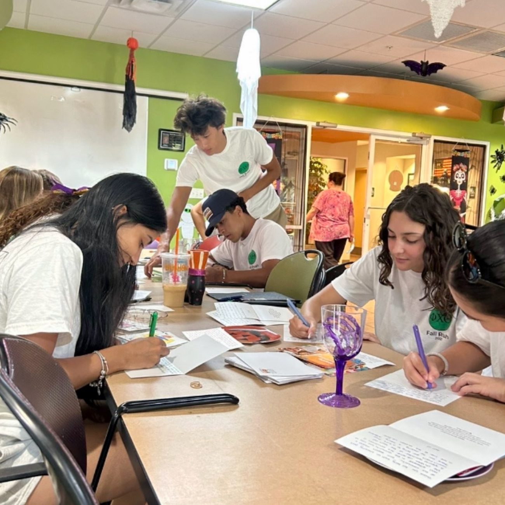

Phi Chi Theta at USF
Rush
Meet the members, get a feel for chapter events, and see if Phi Chi Theta is a good fit for you.
Follow @pctusf on Instagram for Rush dates and how to sign up.

Who can rush?
- Academic path
- Business or economics majors and minors in good academic standing.
- Class year
- USF students in every class year, from first-year students to seniors.
- Experience
- No prior Greek or professional organization experience is required. You do not need to know anyone in the chapter.
What to expect.
At recruitment events, you can talk with chapter leaders and current members about what they work on and what’s expected of new members.
-
Résumé & LinkedIn development
Guidance on presenting your experiences professionally.
-
Professional connections
Opportunities to meet alumni, guest speakers, and business professionals.
-
Communication practice
Structured opportunities to strengthen public speaking and communication.
Common questions.
Can I rush with a business or economics minor?
Yes. USF students with a business or economics minor can rush if they’re in good academic standing.
Where can I ask about dues?
Message @pctusf on Instagram to ask about current dues before joining.
Is Rush a high-pressure evaluation?
Rush gives you and the chapter a chance to get to know each other. No prior fraternity or professional organization experience is required.
How do I find out when Rush starts?
Follow @pctusf on Instagram for dates, locations, and sign-up details. You can also message the chapter there with questions.